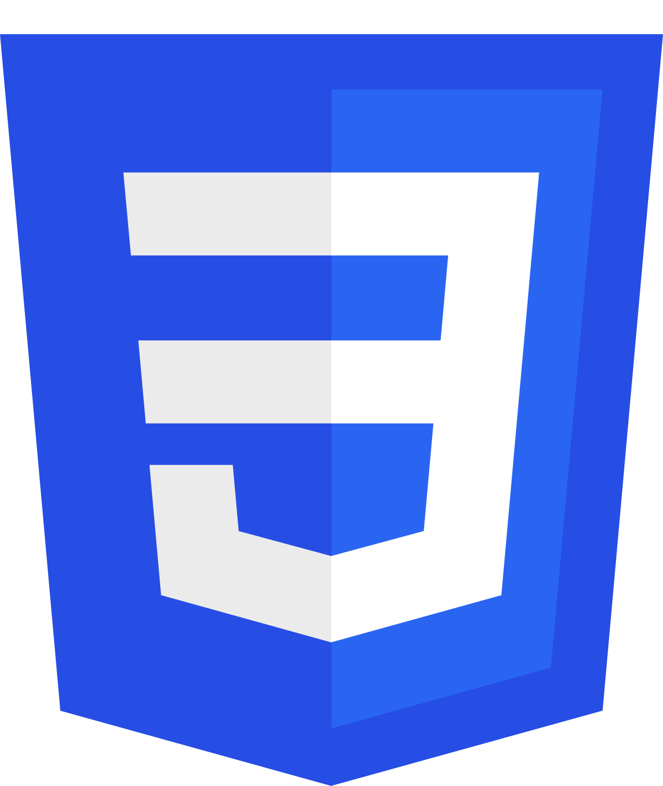
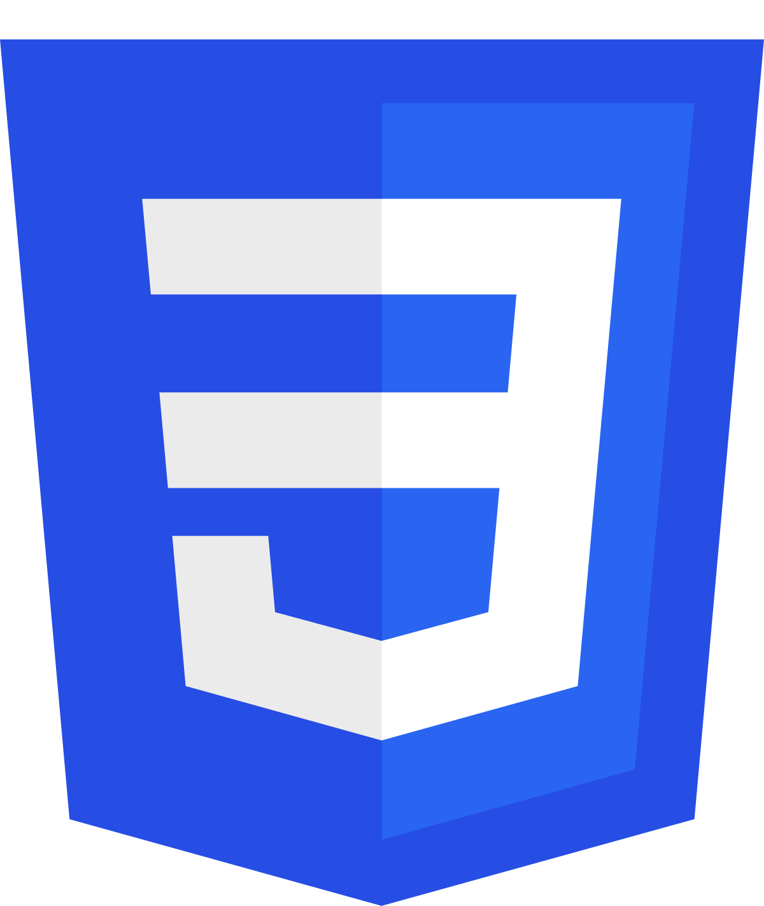

Me Conheça Melhor
Nesta seção, você encontrará informações detalhadas sobre minha trajetória, experiências, habilidades e objetivos profissionais. Um resumo do meu currículo para que você possa entender melhor quem eu sou e o que posso oferecer.
Formações Acadêmicas

Ciência da Computação
2025 - Em Andamento
Idiomas
Inglês - Intermediário
Português - Nativo
Espanhol - Intermediário
Technical Skills
 



Soft Skills
Foco no trabalho em equipe
Capacidade de resolução de problemas
Habilidade multitarefa
Proatividade e iniciativa
Comunicação clara e assertiva
Autonomia na tomada de decisões
Pensamento analítico para situações complexas
Organização
Página ainda não finalizada!!
O desenvolvimento está em andamento...